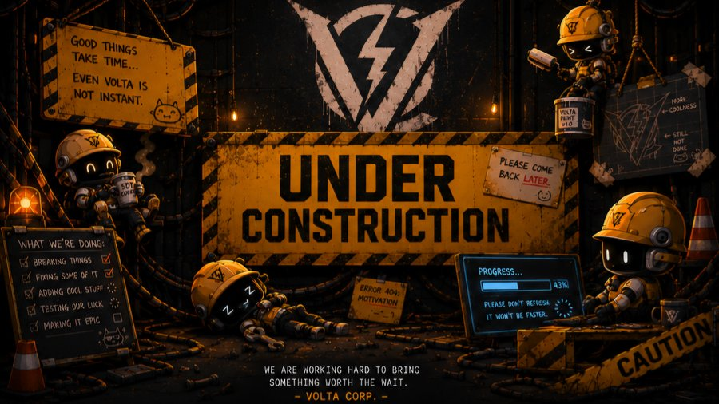

You didn't find a website.
You found a frequency.
Super Duper Techno is an independent, founder-led studio working across games, software, hardware, networks, AI, and original storytelling — eight divisions broadcasting on one signal. Every product still answers to the same rule it started with: creativity and fun over standard edition.
A channel that outgrew talking about it.
SDT wasn't founded in a boardroom. It was a YouTube channel first — gaming and superhero discussion, a place to talk about other people's worlds. The itch to build one of SDT's own is the entire reason any of this exists.
SDT starts as a YouTube channel — gaming and superhero commentary. Talking about other people's worlds, not yet building one.
Commentary turns into ambition. Not a copy of what's already out there — something that actually feels like SDT's own signal.
One idea becomes eight — games, software, hardware, media, AI, and original IP, all broadcasting under a single identity.
Founder-led, still independent, still small. Every division answers to the same original principle: fun first, standard edition never.

Five doors. Same signal.
The Work
Every division, why it exists, and exactly what's live right now — no separating the org chart from the output.
Universe
Volta Chronicles — two centuries of history, four factions, and the era nobody's talking about yet.
The Studio
The small crew actually behind all of this, why it exists, and how to reach us.
On Air
Every live project across every division, broadcasting right now — no roadmap fluff, just what's shipping.
Arcade
A real mini shooting game, tucked into the Studio page. No sign-up, no catch — just don't shoot the allies.
Eight divisions. Every one has its own frequency.
Gaming is the loudest channel. It isn't the only one. Hover a row to tune in.